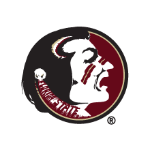
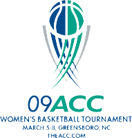

Britney Wright
"Dream big, work hard and don't be an asshole." - Mike Shinoda
Use the arrows or navigation to explore the site.
Skills
Web Project Management
Marketing
Web Development
Social Media
Content Strategy
Public Relations
Event Management
Web Design
Education
Florida State University
Master of Science – August 2010
Major: Integrated Marketing and Management Communication
Certificate: Project Management
Florida State University
Bachelor of Science – May 2009
Majors: Public Relations, Sport Management
Undergraduate Honors Thesis: Content Analysis of Official NCAA Football Bowl Subdivision Athletics Websites
Experience



Freelance Project Manager
May 2013 - Present
Provide project management, marketing and copywriting services for various companies.
- Serve as Operations Manager for SocialGrinder digital agency.
- Manage website development for BLIS.fm, a Washington, D.C. based online radio network.
- Developed strategic online marketing plan for 1,000 Days non-profit organization.
- Created mobile apps for International Baccalaureate (IB) Africa, Europe & Middle East Regional Conference 2013 utilizing MobleRoadie app development software. Set up all sections of the app and added all content.
- Website copywriter for CrowdTrust, a due diligence crowdfunding verification service.
Street Food Spotter – Startup Weekend Richmond, VA
July 2013
Marketing, Reserch and Content Writer for web app that informs people of street food options in the Richmond, VA area.
Link to Project
- Winner of RVA Startup Weekend.
- 1st Place - People's Choice.
- Chose name and wrote copy for website and presentation.
- Co-presenter for final pitch.
CitizenLobby – RevoltDC Hackathon
June 2013
Lead developer on application that allows users to record and share their views on issues through voice messages.
Link to Project
- Named Best Grassroots Hack.
- Utilized Twilio and Bit.ly API’s to facilitate the call-in platform, voice recording, text messaging and link shortening.
- Developed with PHP.
- Continuing to develop with intention of integrating with Eventbrite and possibly other event or target market related platforms.
Discreetly – DC AngelHack
June 2013
Led marketing and wireframe development for web application aimed at providing sexually active adults with a discreet way to go through the STD/STI testing process.
- Won Best PayPal Integration award.
- Created brand name, Discreetly, and tagline, Sexual Health and Peace of Mind.
- Drafted wireframes of the application workflow for the lead developer.
- Developed application copy and designed home page mockup for pitch presentation.
- Researched current STD testing processes and businesses in the market.
- Identified testing center API to integrate into the application.
Site Development Specialist - PrestoSports
April 2011 - May 2013
Served as project manager for over 100 college athletics departments and organizations launching new or redesigned web sites.
- Managed between 10 and 30 clients on a regular basis.
- Collaborated with clients on design, layout and features for new sites.
- Created wireframe mockups based on clients’ preferences to be used by graphic designers.
- Provided content management system training for new clients.
- Ensured sites are prepped with necessary files and settings before design and functionality are implemented by web engineers.
- Provided clear instructions for web engineers to correctly set up new sites.
- Adjusted site styling, content layout and site features as needed.
- Developed ideas for new and improved system features.
- Coordinated with web engineers and developers on project specifications.
- Managed progress and success of project development, testing and implementation.
- Provided customer and fan support as on-call operations contact.
- Served as the community manager for the company Facebook fan page.
- Collaborated with members of the company’s marketing group to build awareness of new developments through blogs, Facebook, Twitter and e-newsletters.
Digital Communication Intern – National Collegiate Athletic Association (NCAA)
June 2010 - March 2011
Selected among hundreds of applicants to participate in the annual NCAA Postgradute Internship program.
- Trained NCAA staff on the use of Cover It Live interactive chat service
- Facilitated live streaming events aimed at member institutions and the public.
- Facilitated NCAA Concussion Webinar in July 2010 that attracted over 400 unique viewers and was replayed over 600 times as of August 2010.
- Served as project manager for two video projects for the Division I Student Athlete Advisory Committee (SAAC).
- Coordinated with various internal and external parties from script development through video production to ensure the projects’ completion in a timely and successful manner.
- Served as registration chair for the 2011 NCAA Emerging Leaders Seminar, a professional development forum targeting college graduate assistants and interns.
- Developed seminar agenda and managed the participant registration process including coordinating with IT to create an online registration system.
- Gathered and wrote daily employment transactions on NCAA.org.
- Monitored public and membership sides of NCAA.org using Google Analytics.
- Partnered with search marketing firm to track URL redirection, search engine rankings and site analytics.
- Provided design assistance for the NCAA Division II yearbook.
- Wrote articles for the NCAA Champion magazine and NCAA.org.
Facilities and Event Management Assistant – Florida State University Department of Athletics
August 2006-May 2010
Provided operational assistance during athletic events including regular season home events and university hosted NCAA championships.
- Duties included event setup, breakdown, crowd management and coordinating various game-day staff needs.
- Setup event space for athletics department functions including banquets, press conferences and meetings.
- Maintained functionality of multiple athletic venues. Duties included inspecting facilities, developing and maintaining inventory lists and coordinating with various groups to address facility issues and repairs.
Sports Information Graduate Assistant – Florida State University Department of Athletics
August 2009-April 2010
Primary media relations contact for the Florida State men’s and women’s swimming and diving teams.
- Designed the 2009-10 swimming and diving media guide. Laid out all content using Adobe InDesign. Wrote or updated bios for over 60 student-athletes and coaches. Worked with design firm on the media guide covers and page border design.
- Assisted in the design of the 2009-10 cross country and women’s tennis media guides. Updated content for the 2009-10 women’s soccer media guide, including student-athlete bios and historical records.
- Wrote event-related press releases and student-athlete feature stories. Distributed team news and statistics to the media.
- Coordinated interviews between student-athletes and coaches and the media.
- Planned and executed a redesign of the Academic Services web pages on Seminoles.com in conjunction with the Athletics Academic Support Services department. Created graduation photo galleries, academic honors page with collapsible sections, and links to external information for prospective and current student athletes. The redesigned format has since been applied to other sections of Seminoles.com including Student Services and SAAC.
Sports Information Assistant – Florida State University Department of Athletics
January 2008-July 2009
Primary sports assistance: soccer and baseball.
- Wrote feature stories and press releases for game day athletic programs and Seminoles.com, the official website of Florida State athletics.
- Responsible for maintaining and updating the women’s soccer in-season statistics and student-athlete bios for the game notes package distributed before each match.
- Edited copy for game day programs, media guides and Seminoles.com.
- Conducted and transcribed student-athlete and coach interviews for use in media guides, feature stories and media use.
- Game day assistance: football, men’s basketball and women’s basketball.
- Updated live game chat and Twitter feed during home baseball games.
- Assisted with social media efforts for the women’s soccer team and men’s basketball team.
World Series of Poker Media Relations Intern – Caesars Entertainment
Summer 2009
Assisted international and national media with rules and regulations during the 57-event World Series of Poker.
- Facilitated media credential distribution process.
- Oversaw tournament operations/logistics.
- Conducted tournament data entry.
- Provided crowd management assistance during Ante Up for Africa celebrity poker tournament.
Personnel Assistant – Florida State University Department of Athletics
August 2008 - May 2009
Managed job data for over 400 department employees.
- Supervised biweekly time entry and approvals.
- Worked with program associate and the university human resources department to process new department hires.
- Coordinated with student financial services department and athletics department units to identify work study opportunities and fill vacancies.
Media Volunteer – Atlantic Coast Conference Women’s Championship Basketball Tournament
March 2009
Researched statistics and created game notes for all 11 ACC tournament basketball games.
Account Assistant – Kidd Public Relations
Summer 2008
Worked on various projects in the trasportation, hospitality, financial and sports industries.
- Drafted press releases and copy for print, online and radio use.
- Developed media lists and fact sheets.
- Monitored blog coverage of statewide motorcycle safety campaign.
ISP Sports Marketing Assistant – Florida State University Department of Athletics
Fall 2007
Promoted athletic programs through on-site activities and distribution of informational materials.
Seminole Boosters Assistant – Florida State University
Fall 2006
Coordinated plans for athletics donors including event tickets, travel and hotel accommodations.